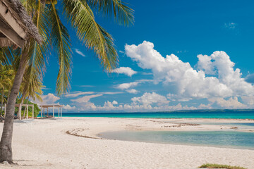
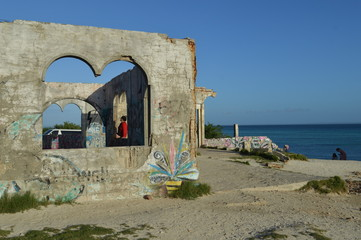

Why I Travel
Traveling has always been a passion of mine. The thrill of exploring new places, meeting new people, and experiencing different cultures is unmatched. Bantayan Island is one of those destinations that captured my heart, and I want to share its beauty with the world.

